Shoddy Documentation
Everything here, organised by what you came for
Shoddy is a purely functional BASIC: friendly typed syntax on the surface, a concatenative stack core underneath, compiled onto .NET by the mill, with a standard library of machines.
Mungo Caverns, a purely functional reimagining of our favourite text adventure — and Devil's Dust, the language's own name-story animated, with a tuning console that goes to eleven.
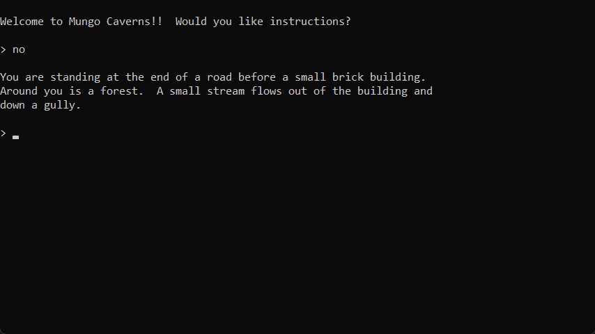
Mungo Cavernsthe cave crawl, purely functional — graded against the original’s transcripts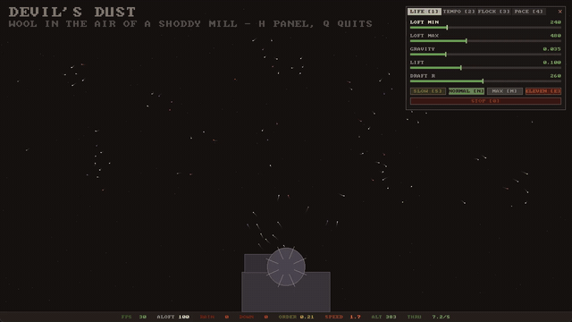
Devil's Dustboids over the devil’s drum — live console, machine-room droneOne download is the whole toolchain. The
VS Code extension carries the mill and every
machine inside it — install the .NET 10 runtime (the
runtime, not the SDK), install the .vsix, open any folder, and
run. Nothing to clone, nothing to build, no environment to set: a bare
Include "seq.shoddy" resolves anywhere, and breakpoints,
variables, and the call stack work out of the box.
Setup is two steps.
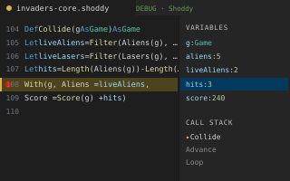
Debug in VS Codebreakpoints, variables, call stackBuild a real program from an empty folder, learn the method for driving the same craft with an AI assistant, then watch that method run at full size.
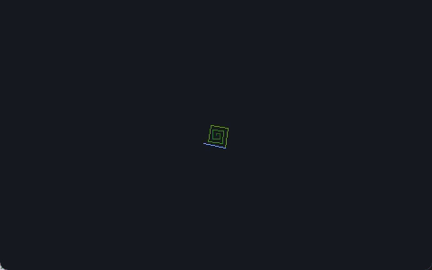
Your First Millan empty folder to a spirograph — tests, build files, and the debugger from the first run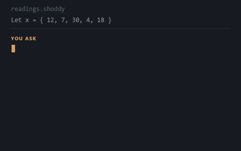
Building with an AIrequirements to shippable code — briefs, plans, verification, and blank templates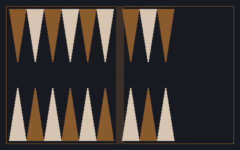
Backgammon, by Specificationthe method at full size — every prompt for an engine and a game, written by a modelComplete programs woven from the machines — each split into a headless, unit-tested pure core and a thin I/O shell. Click through for the full write-up on each one, or start at the mills catalog.
 mungo-cavernsthe cave crawl, purely functional
mungo-cavernsthe cave crawl, purely functional
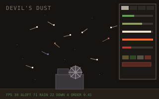
devils-dustboids with a console · goes to eleven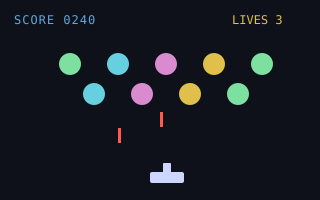
invadersgraphical window · colour + sound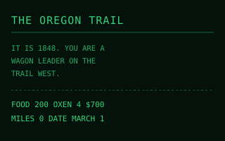
oregonthe 1971 classic, reclaimed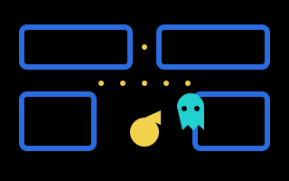
pac-vt100arcade chase in the terminal irisneural classifier · trains in 4s
irisneural classifier · trains in 4s
 demographicsneural regression · the other head
demographicsneural regression · the other head
 simplex-from-mps83-var LP, solved from MPS
simplex-from-mps83-var LP, solved from MPS
The standard library, one folder of Shoddy source per machine — graphics, sound, statistics, neural nets, an LP solver, keyed files, and TCP/IP, batteries included. Full word references in the machines catalog.
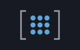
matrixflat row-major matrices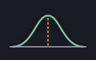
statsmeans to real p-values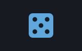
randomshuffles, samples, ranges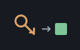
dictkey/value over Pair lists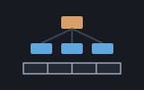
isamkeyed files, B+tree index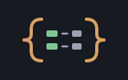
jsonJSON, both directions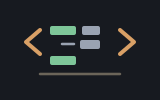
xmlXML, both directions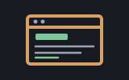
htmlweb pages, forgivingly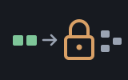
cryptoreversible obfuscation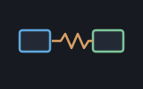
netTCP/IP, non-blocking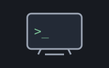
vt100terminal control codes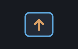
keyskey codes to GameKeys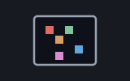
scribblerpixels in a window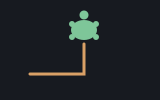
turtlepurely functional turtles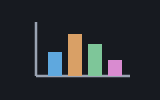
plotterstatistical charts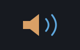
buzzernotes, MML tunes, three wavesPrint("HELLO") to a grade book that keeps its
roster on disk, with BASIC-veteran notes at the end. Install first —
Setup is two steps, because the
VS Code extension carries the whole toolchain with it.
The Toolchain page is there when you want the mill on a
command line.